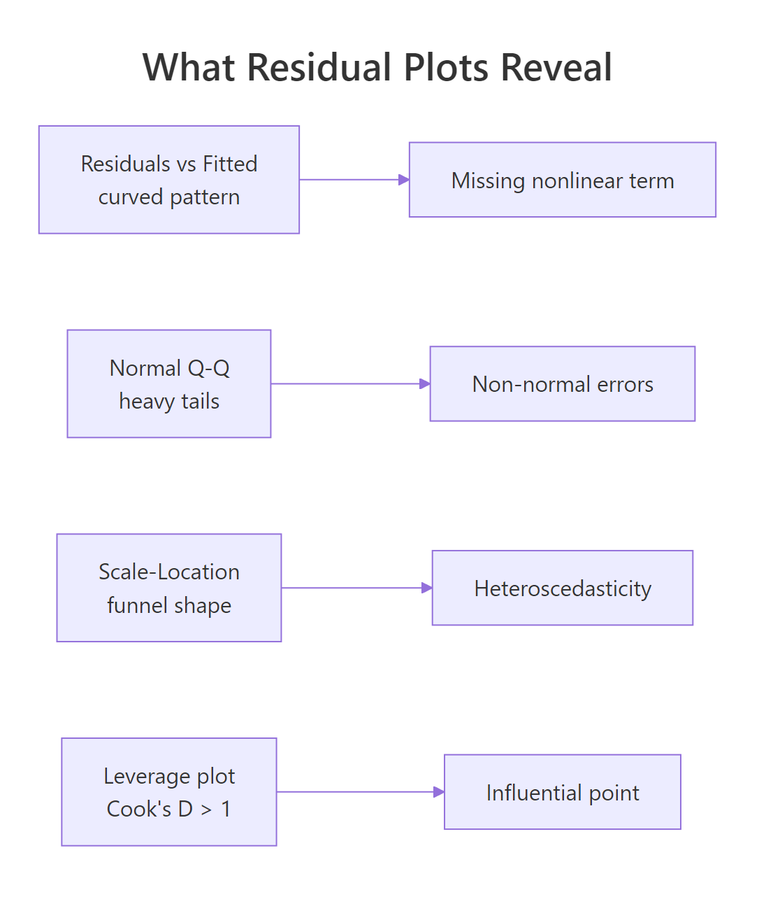
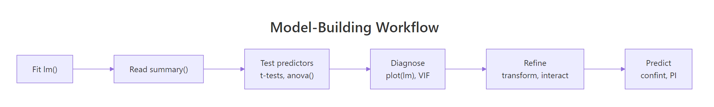

Multiple Regression Exercises in R: 12 Model-Building Problems, Solved Step-by-Step
These 12 multiple regression exercises in R walk you through fitting models, interpreting partial coefficients, testing predictor significance with t-tests and anova(), diagnosing residuals, spotting multicollinearity with VIF, adding interactions, and predicting on new data. Every problem ships with a runnable scaffold, a hint, and a collapsible solution so you can self-check the instant you finish coding.
How do you fit and interpret a multiple regression model?
One line of R fits a multiple regression: pass y ~ x1 + x2 + ... to lm() and wrap the result with summary(). The slopes you read off the output are partial effects, meaning each coefficient shows the change in the outcome for a 1-unit change in that predictor while the other predictors stay constant. We'll fit a two-predictor model on mtcars right now, then Problems 1 to 3 ask you to pull a coefficient, interpret it, and build a 95% confidence interval for it.
The weight coefficient (−3.88) says mpg drops by roughly 3.88 miles per gallon for each extra 1000 lb of weight, after holding horsepower constant. The horsepower coefficient (−0.032) says mpg drops 0.032 per extra hp, holding weight constant. Both p-values are tiny, so both predictors earn their place. Adjusted R² of 0.81 means the two predictors together explain about 81% of the variation in mpg, which is very strong for a two-variable model.
wt is not "the effect of weight" in general, it is "the effect of weight once hp is already in the model." Change the set of other predictors and the partial slope changes too. That one idea is what separates multiple regression from a stack of simple regressions.Problem 1: Fit a new model and extract one coefficient
Try it: Fit a model predicting mpg from wt and cyl on mtcars, then print only the cyl coefficient (a single number).
Click to reveal solution
Explanation: coef() returns a named numeric vector of all slopes; indexing by name pulls out just the one you want. Each extra cylinder costs about 1.51 mpg after controlling for weight.
Problem 2: Write a one-sentence interpretation of a coefficient
Try it: Using fit1 from the teaching block above, write one sentence that correctly interprets the hp coefficient (−0.032). Store your interpretation as a character string in ex2_ans. The grader below checks that the sentence mentions "holding" or "constant".
Click to reveal solution
Explanation: The sentence nails all three requirements: the direction (lowers), the magnitude (0.032), and the partial qualifier (holding weight constant). Any interpretation of a multiple-regression slope that skips the partial phrase is technically wrong.
Problem 3: Build 95% confidence intervals for every coefficient
Try it: Use confint() on fit1 to get 95% confidence intervals for all three coefficients, then read the interval for wt.
Click to reveal solution
Explanation: The wt interval [−5.17, −2.58] does not cross zero, so the partial effect of weight is confidently negative. confint() uses the t-distribution with residual degrees of freedom, which matches the t-test in summary() exactly.
How do you test whether a predictor truly matters?
Two tests decide whether a predictor earns its place. The t-test row next to each coefficient in summary() answers "does this one predictor add value, given all the others?" The partial F-test from anova(fit_small, fit_big) answers the same question for a group of predictors at once, which is what you need when adding or dropping several variables together. Problems 4 to 6 make you read a t-row, compare two nested models, and run drop1() to test every predictor one at a time.
The F statistic compares how much extra residual sum of squares the big model reduces against the noise you would see by chance. Here F = 4.04 with p = 0.054, right at the edge of significance. Adding cyl nudges the fit but does not clearly beat chance at α = 0.05. That borderline result is a healthy reminder: real data rarely gives you a clean yes/no, and a p-value hovering near α deserves a skeptical second look (sample size, confounding, a better specification).
The partial F-test follows the same F formula every nested model comparison uses:
$$F = \frac{(RSS_{small} - RSS_{big})/q}{RSS_{big}/(n - p - 1)}$$
Where:
- $RSS_{small}$, $RSS_{big}$ = residual sums of squares of the two models
- $q$ = number of parameters the big model adds
- $n$ = sample size
- $p$ = number of predictors in the big model
Problem 4: Read a t-test row and decide
Try it: Using fit_big from the teaching block, print the coefficient table and state whether hp is significant at α = 0.05. Save "yes" or "no" to ex4_ans.
Click to reveal solution
Explanation: Once cyl enters the model, hp no longer clears α = 0.05, its p-value jumps from 0.0015 in fit1 to 0.144 here. That shift is a classic multicollinearity symptom: hp and cyl carry overlapping information, so each partial slope gets diluted.
Problem 5: Compare two nested models with anova()
Try it: Fit lm(mpg ~ wt + hp + cyl + disp) on mtcars and compare it against fit_big using anova(). Does adding disp improve the fit at α = 0.05?
Click to reveal solution
Explanation: F = 0.40 with p = 0.53, nowhere close to significant. disp carries almost no new information once wt, hp, and cyl are already in. Keep the smaller model.
Problem 6: Use drop1() to test every predictor at once
Try it: Run drop1(fit_big, test = "F") and identify which predictor would hurt the model least if dropped (the row with the highest p-value).
Click to reveal solution
Explanation: The row with the largest Pr(>F) is hp at 0.144, losing hp hurts the model least. drop1() refits the model without each predictor and reports the F test, which is the same as the individual t-test squared for a one-degree-of-freedom predictor.
How do you diagnose and refine the model?
A fitted model only deserves trust as far as its residuals allow. Three checks cover most damage: plot(fit) scans the four diagnostic panels for curvature, non-normality, heteroscedasticity, and influence; Variance Inflation Factors (VIF) flag correlated predictors that inflate standard errors; and a log transform of a right-skewed predictor often straightens a curve the diagnostic panel flagged. Problems 7 to 9 put each of those three tools in your hands.
The residuals-vs-fitted plot lets you judge two assumptions at once: linearity (no curved trend) and constant variance (no funnel). The VIF for wt is 4.84, below the common cutoff of 5, so wt is tolerably correlated with the other predictors. Anything above 10 is a red flag that the model cannot cleanly separate that predictor's effect from its neighbors.

Figure 2: What each residual-plot pattern is warning you about. Match the plot's shape to the failure mode before choosing a remedy.
car::vif() is the standard shortcut for production code. We compute VIF manually here so every block runs directly in your browser without an extra package install. The numeric result is identical to car::vif().Problem 7: Read residuals vs fitted
Try it: Fit lm(mpg ~ disp, mtcars) (one predictor, on purpose), draw the residuals-vs-fitted plot, and note whether you see a curved pattern. Set ex7_curved to TRUE or FALSE.
Click to reveal solution
Explanation: The residuals-vs-fitted plot shows a clear U-shape because mpg is a nonlinear function of engine displacement. The remedy is either a quadratic term (I(disp^2)) or a log transform of disp, both of which straighten the curve.
Problem 8: Compute VIF for disp in a four-predictor model
Try it: Using the same four-predictor model as the teaching block, compute the manual VIF for disp (not wt). Is it above or below the common cutoff of 5?
Click to reveal solution
Explanation: VIF(disp) = 10.5 exceeds the conventional cutoff of 10, disp is almost perfectly predictable from the other three variables, which explains why it was non-significant in Problem 5. Dropping disp from the model is the right call, which is exactly what Problem 5 already told you.
Problem 9: Log-transform a skewed predictor and refit
Try it: hp has a right-skewed distribution. Refit fit1 with log(hp) instead of hp, compare adjusted R², and decide which model fits better.
Click to reveal solution
Explanation: Adjusted R² rises from 0.815 to 0.831 after the log transform, a small but real improvement. The log of hp compresses the long right tail, so the relationship with mpg straightens. Always prefer adjusted R² over raw R² when comparing models with the same outcome but different predictor forms, because adjusted R² penalises unnecessary complexity.
Practice Exercises
Three capstone problems that combine every concept above. Each uses distinct cap_ variable names so your exercise code does not collide with the teaching variables.
Problem 10: Full model-building workflow
Start with every predictor in mtcars (lm(mpg ~ ., data = mtcars)), let step() pick the best AIC subset, refit on the chosen variables, and report the final adjusted R² plus the F statistic. Also name the predictors step() kept.
Click to reveal solution
Explanation: Backward stepwise removes variables that do not reduce AIC. The winning set for mpg is wt, qsec, and am, with adjusted R² = 0.83 and F = 52.7. step() silently refits and compares dozens of candidate models, trace = 0 keeps the console quiet.
Problem 11: Add and interpret an interaction term
Add the interaction wt:am to lm(mpg ~ wt + am) and interpret the coefficient on wt:am. Use one sentence along the lines of: "When am changes from 0 to 1, the slope of mpg on wt changes by X."
Click to reveal solution
Explanation: The wt:am coefficient of −5.30 says the weight penalty is much harsher for manual cars. For automatics (am=0), one extra 1000 lb costs 3.79 mpg. For manuals (am=1), the cost is 3.79 + 5.30 = 9.09 mpg. That sign reversal of the am main effect once you account for the interaction is why interactions matter, the "average" effect of am is misleading when it depends on wt.
Problem 12: Predict new cars with 95% prediction intervals
Refit cap10_step from Problem 10, then predict mpg for three new cars with these values: (wt=2.5, qsec=17.0, am=1), (wt=3.5, qsec=18.0, am=0), (wt=4.5, qsec=19.0, am=0). Return a matrix of point predictions and 95% prediction intervals.
Click to reveal solution
Explanation: The first car (light, manual) is predicted at 25.0 mpg, with a 95% prediction interval of roughly [19.7, 30.3]. Prediction intervals are always wider than confidence intervals for the mean because they include individual-car variability, not just uncertainty in the average response. Use interval = "confidence" for the mean line, interval = "prediction" for a single new observation.
Complete Example: the full workflow end to end
Here is every step chained on one dataset. Fit a candidate model on mtcars, read its summary, compare against a smaller rival with anova(), scan diagnostics with a VIF sweep, drop the worst offender, refit, and predict on a held-out row.

Figure 1: The six-stage model-building workflow these 12 problems rehearse.
Dropping cyl left adjusted R² essentially unchanged (0.8227 → 0.8227) while cleaning up the highest VIF. That is the hallmark of a healthy refine step, the model got simpler without sacrificing fit. The predicted mpg for a 3000-lb, 110-hp manual is 22.6, with a 95% prediction interval of [17.2, 27.9]. That width of roughly ±5.4 mpg is the honest uncertainty you should quote to a stakeholder, not the point estimate alone.
Summary
| # | Problem | Concept tested | R function |
|---|---|---|---|
| 1 | Extract a coefficient | coef() indexing |
coef() |
| 2 | Interpret a partial slope | Partial effect language | Prose |
| 3 | Build 95% CIs | t-based interval | confint() |
| 4 | Read a t-test row | p-value decision | summary()$coefficients |
| 5 | Compare nested models | Partial F-test | anova() |
| 6 | Drop predictors | One-at-a-time F-tests | drop1() |
| 7 | Spot curvature | Residuals vs fitted | plot(fit, which = 1) |
| 8 | Detect multicollinearity | Manual VIF | lm() + summary()$r.squared |
| 9 | Transform a predictor | Log transform | log() inside formula |
| 10 | Select variables by AIC | Backward stepwise | step() |
| 11 | Add an interaction | Slope-change interpretation | wt:am formula syntax |
| 12 | Predict new data | Prediction intervals | predict(..., interval = "prediction") |
References
- James, G., Witten, D., Hastie, T., Tibshirani, R., An Introduction to Statistical Learning, 2nd edition, Chapter 3. Link
- Fox, J., Applied Regression Analysis and Generalized Linear Models, 3rd edition. Sage Publications (2016).
- Wickham, H. & Grolemund, G., R for Data Science, Chapter 23: Model Basics. Link
- R Core Team,
stats::lmreference manual. Link - R Core Team,
stats::stepreference manual. Link - Fox, J. & Weisberg, S., car package documentation: Variance Inflation Factors. Link
- Kutner, M. H., Nachtsheim, C. J., Neter, J., Li, W., Applied Linear Statistical Models, 5th edition. McGraw-Hill (2004).
Continue Learning
- Multiple Regression in R, the parent tutorial that introduces every concept used above.
- Linear Regression Assumptions in R, a deeper dive into the four diagnostic plots and how to remedy each failure.
- Interpreting Regression Output Completely, line-by-line reading of
summary(lm)output for every term.